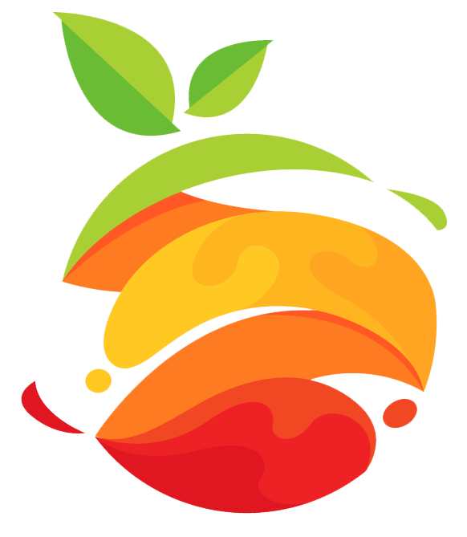

Tentangbuah.com
Pisang

Pisang adalah nama umum yang diberikan pada tumbuhan
terna raksasa berdaun besar memanjang dari
suku Musaceae. Beberapa jenisnya (Musa acuminata, M. balbisiana, dan M. ×paradisiaca) menghasilkan buah konsumsi yang dinamakan sama.
Buah ini tersusun dalam tandan dengan kelompok-kelompok tersusun menjari
yang disebut sisir. Hampir semua buah pisang memiliki kulit
berwarna kuning ketika matang, meskipun ada beberapa yang berwarna
jingga, merah, hijau, ungu, atau bahkan hampir hitam. Buah pisang
sebagai bahan pangan merupakan sumber energi (karbohidrat) dan
mineral, terutama kalium.
Khasiat Pisang
- Membantu Atasi Hipertensi
- Menyehatkan Tulang
- Melancarkan Aliran Oksigen ke Otak
- Menurunkan Berat Badan
- Perlancar Metabolisme
Daftar Harga
| Jenis buah | Harga | |
|---|---|---|
| perkilo | perbiji | |
| Pisang Ambon | 50000 | 5000 |
| Pisang Kepok | 60000 | 6000 |
| Pisang Seribu | 70000 | 7000 |
| Pisang Mas | 55000 | 5500 |